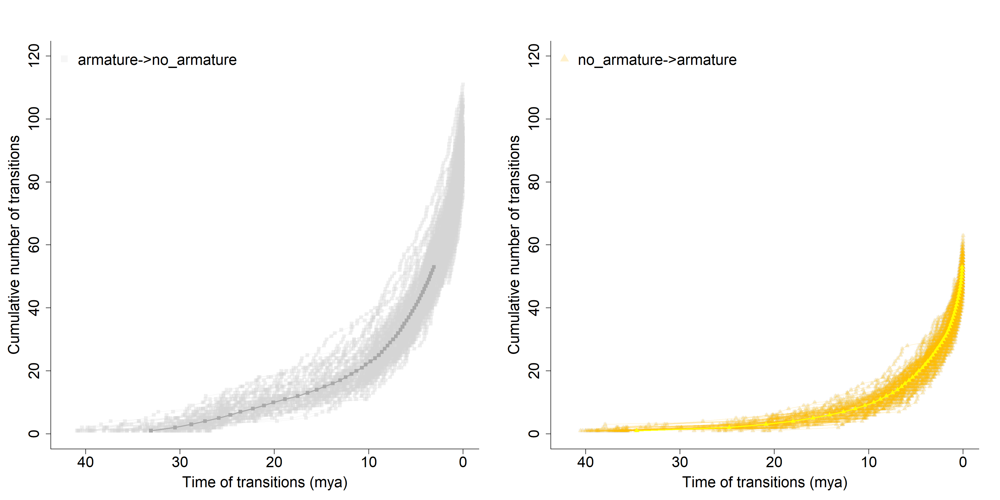

The following code is a mixture of code written by Liam Revell within the Phytools package, especially from the source code of the ctt() function (version Oct 2023),
and from the code for Figure 4 in Stephens et al., (2023):Paper; GitHub Repo
Ref [1] Liam Revell’s ctt() function from phytools
Ref [2] Stephens et al Guthub repo: transition_times function
Ref [3] Stephens et al Guthub repo: simmap.R script
0. Required Libraries
Code
# Clean environment:rm(list=ls())# Libraries:library(phangorn) # to compute MCC tree
Loading required package: ape
Code
library(evobiR) # reorder data by tree
Attaching package: 'evobiR'
The following object is masked from 'package:phangorn':
AICc
Code
library(phytools) # v. ‘1.9.16’ for phylo stuff
Loading required package: maps
Code
library(dplyr) # for data handling
Attaching package: 'dplyr'
The following object is masked from 'package:ape':
where
The following objects are masked from 'package:stats':
filter, lag
The following objects are masked from 'package:base':
intersect, setdiff, setequal, union
Code
library(evobiR) # v. ‘1.1’ To reorder data based on treelibrary(geiger) # v. ‘2.0.11’ for Mk Modelslibrary(tictoc) # for time measurements of computationslibrary(tidyr) # data handlinglibrary(ggplot2) library(prettyGraphs) # for transparancy settings while plotting
1. My Data (skip and read back in from RDS)
A) Legumes
B) Mammals
Now we have 2 Simmap RDS objects: each with 100 simulations on the MCC tree (mtrees)
Code below function comes from script Ref[3]: Simmap.R
A) Legumes
Code
rm(list=ls())#| label: Fig4 Pollination Study Data Preparation## Ref[1], Ref[0] -> Ref[2]transition_times <-function(simmap){# below adapted from Liam Revells' phytools blog # http://blog.phytools.org/2015/08/getting-timing-of-trait-changes-from.html# extracts raw transition times from a simmap (collapses multiple transitions# down into single transition events)# get tips and their states x <- phytools::getStates(simmap,"tips")# get unique states states <-sort(unique(x))# get length of states m <-length(states)# below makes a little matrix describing transitions ct <-sapply(states, function(x,y) sapply(y, function(y,x) paste(x,"->", y, sep=""), x = x), y = states)rm(x, states)# then a matrix to invalidate self->self transitions ii <-matrix(TRUE, m, m)diag(ii) <-rep(FALSE, m)# then a list to store results in changes <-vector(mode="list", length = m*(m -1))rm(m)# named by types of transitionsnames(changes) <-as.vector(ct[ii])rm(ct, ii)# then singling out maps where transitions happen (where there is more than 1 state) nc <-sapply(simmap$maps, length) -1 ind <-which(nc >0) nc <- nc[ind]# getting the node heights (measure of time/branch lengths) across the tree H <- phytools::nodeHeights(simmap) maps <- simmap$maps[ind]# then looping through and calculating the node heights of each transitionfor(i in1:length(maps)){for(j in1:nc[i]){ sc <-paste(names(maps[[i]])[j:(j +1)], collapse ="->") h <- H[ind[i], 1] +cumsum(maps[[i]])[j] changes[[sc]] <-c(changes[[sc]], as.numeric(h)) } }rm(nc, ind, h, H, i, j, sc, maps)# removing any nulls from list of changes and sorting small to large changes <- changes[!sapply(changes, is.null)] changes <-lapply(changes, sort, decreasing =FALSE)# now convert this changes list into nice data frame output output <-data.frame()for(i in1:length(changes)){ df <- dplyr::bind_cols(changes[i]) df <- df %>%mutate(transition =colnames(df)) %>%rename(nodeheight =1) output <-rbind(output, df) }# node heights are the height above the root, so time but inverse along the tree# to get time from node heights need to subtract from max height of tree output$time <-max(nodeHeights(simmap)) - output$nodeheight# get rid of nodeheight column output <- output[-1]# and return the output! to graph etc. output}# End of function ====================================================================================== ## Ref[0] -> Ref[3]mtrees <-readRDS("../output/RDS/legumes_mtrees_multiSimmap.rds")# apply function across list of multiple simulations:armature_transitions <-data.frame()for(i in1:length(mtrees)){ temp <-cbind(i, transition_times(mtrees[[i]])) armature_transitions <-rbind(armature_transitions, temp)}rm(temp, i)# Number of transitions across all simulationstable(armature_transitions$transition)
# build new data frame with cumulative number of transitionsarmature_trans_cumul <-data.frame()for(n in1:100){ trans <- armature_transitions %>% dplyr::filter(i == n) %>% dplyr::group_by(transition) %>%arrange(desc(time), by.group = T) %>% dplyr::mutate(trans_no =row_number(i)) armature_trans_cumul <-rbind(armature_trans_cumul, trans)}rm(n, trans)##### copied from somewhere else in the same script....:# first need to know average number of transitions across simulations, roundedtrans_avg_length <- armature_trans_cumul %>% dplyr::group_by(transition, i) %>% dplyr::mutate(no_trans =max(trans_no)) %>% dplyr::ungroup() %>% dplyr::filter(trans_no == no_trans) %>% dplyr::group_by(transition) %>% dplyr::mutate(avg_length =round(mean(no_trans), digits =0)) %>% dplyr::select(transition, avg_length) %>% dplyr::ungroup() %>% dplyr::distinct()# now knowing this, can rearrange data and average times across rows# Note by Frieda: Here they make a mistake. They assume that in each simulation, the first transition (and so on) happened approximately at the same time. They number all transitions, starting with 1 being the first after the root and then averaging over time times. # This produces wrong transition times as sometimes very early transitions are averaged with very late ones and there can be millions of years in between. # This is also the reason why the mean rates do not start with the origin of the clade avg_trans_times <- armature_trans_cumul %>% dplyr::group_by(transition, trans_no) %>% dplyr::mutate(avg_time =mean(time)) %>% dplyr::mutate(SE_time =sqrt(var(time) /length(time))) %>% dplyr::select(transition, trans_no, avg_time, SE_time) %>% dplyr::distinct()# reduce avg_trans_times to trans_avg_lengthavg_trans_times_a2na <- avg_trans_times %>% dplyr::filter(transition =="armature->no_armature") %>% dplyr::filter(trans_no <= trans_avg_length[1,2])
Warning: Using one column matrices in `filter()` was deprecated in dplyr 1.1.0.
ℹ Please use one dimensional logical vectors instead.
Code
avg_trans_times_na2a <- avg_trans_times %>% dplyr::filter(transition =="no_armature->armature") %>% dplyr::filter(trans_no <= trans_avg_length[2,2])avg_trans_times <-rbind(avg_trans_times_a2na, avg_trans_times_na2a)rm(avg_trans_times_a2na, avg_trans_times_na2a)# export these results to csv in case I need themreadr::write_csv(avg_trans_times, "../output/CSV/Legumes_mean_transition_times_MCC.csv")
Now we set our colours for plotting and add some transparancy for the simulation data:
First we will get an overview of the transitions by plotting a histogram and a density graph where x is the the average time of transitions and y is the density of it. The figure is saved in the output/Figs/ folder.
Plot1 Mean transition times density & histogram
Code
# Plot 1: Mean Transition times Histogram & Density graph ============================================ ##pdf("../output/Figs/Legumes_mean_transition_times_hist.pdf", height = 2.8, width = 6)min <-min(avg_trans_times$avg_time)max <-max(avg_trans_times$avg_time)ax <-pretty(min:40, n =20)arm_to_no_arm <- avg_trans_times %>% dplyr::filter(transition =="armature->no_armature") %>% dplyr::mutate(arm_to_no_arm = avg_time) %>% dplyr::ungroup() %>% dplyr::select(arm_to_no_arm)no_arm_to_arm <- avg_trans_times %>% dplyr::filter(transition =="no_armature->armature") %>% dplyr::mutate(no_arm_to_arm = avg_time) %>% dplyr::ungroup() %>% dplyr::select(no_arm_to_arm)a2na <-hist(arm_to_no_arm$arm_to_no_arm, breaks = ax, plot =FALSE)na2a <-hist(no_arm_to_arm$no_arm_to_arm, breaks = ax, plot =FALSE)plot (a2na, col = myColours[1], xlab ="Time of transitions (mya)", main ="", ylab ="number of transitions", ylim =c(0, 60), xlim =c(58,0)) # alter if x values change!plot (na2a, col = my_cols[2], add =TRUE)
Code
# data for density grapharm_to_no_arm <- armature_transitions %>% dplyr::filter(transition =="armature->no_armature") %>% dplyr::mutate(arm_to_no_arm = time) %>% dplyr::select(arm_to_no_arm, simulation = i)no_arm_to_arm <- armature_transitions %>% dplyr::filter(transition =="no_armature->armature") %>% dplyr::mutate(no_arm_to_arm = time) %>% dplyr::select(no_arm_to_arm, simulation = i)# calculate density curvedensity_a2na <-density(arm_to_no_arm$arm_to_no_arm)density_na2a <-density(no_arm_to_arm$no_arm_to_arm)# plot the densityplot(density_a2na, lwd =2, col = myColours[2], xlim =c(58,0), xlab ="Time of transitions (mya)", bty ="l", ylim=c(0, 0.25),cex.lab =1.4, cex.axis =1.4, main =NULL, sub =NULL, title =NULL)lines(density_na2a, lwd =2, col = myColours[1], xlim =c(58,0))# add data-points with noise in the X-axisrug(jitter(no_arm_to_arm$no_arm_to_arm), col = my_cols[2])rug(jitter(arm_to_no_arm$arm_to_no_arm), col = my_cols[1])
Code
#dev.off()
Plot2 Cumulative Rates Plot
Next we will plot the cummulative transition rates. x = time of the transition y = number of transitions (naturally grows with time) The figure is saved in the output/Figs/ folder.
Code
#pdf("../output/Figs/Legumes_RatesPlot.pdf", height = 8, width = 10)par(mar =c(5.1, 5.1, 4.1, 2.1)) # increase marginsarm_to_no_arm <- armature_trans_cumul %>% dplyr::filter(transition =="armature->no_armature")# first set up basic plot parametersplot(arm_to_no_arm$trans_no ~ arm_to_no_arm$time,type ="p", bty ="l", xlim =c(42,0), ylim =c(0,90),col = my_cols[1], pch =15,xlab ="Time of transitions (mya)", ylab ="Cumulative number of transitions",cex.lab =1.8, cex.axis =1.8)# then loop through all data and add all points and lines to plot for 1000 simulationsfor(n in1:100){ test <- armature_transitions %>% dplyr::filter(i == n) %>% dplyr::group_by(transition) %>% dplyr::mutate(trans_no =row_number(i)) no_arm_to_arm <- test %>% dplyr::filter(transition =="no_armature->armature") arm_to_no_arm <- test %>% dplyr::filter(transition =="armature->no_armature")points(arm_to_no_arm$trans_no ~ arm_to_no_arm$time, col = my_cols[1], pch =15)lines(arm_to_no_arm$trans_no ~ arm_to_no_arm$time, col = my_cols[1])points(no_arm_to_arm$trans_no ~ no_arm_to_arm$time, col = my_cols[2], pch =17)lines(no_arm_to_arm$trans_no ~ no_arm_to_arm$time, col =my_cols[2])}# then add average points and line in blue# first prep datano_arm_to_arm <- avg_trans_times %>% dplyr::filter(transition =="no_armature->armature") %>% dplyr::filter(trans_no <= trans_avg_length[1,2])arm_to_no_arm <- avg_trans_times %>% dplyr::filter(transition =="armature->no_armature") %>% dplyr::filter(trans_no <= trans_avg_length[2,2])# then add to plotpoints(arm_to_no_arm$trans_no ~ arm_to_no_arm$avg_time,col ="darkgrey", pch =15)lines(arm_to_no_arm$trans_no ~ arm_to_no_arm$avg_time, col ="darkgrey", lwd=2)points(no_arm_to_arm$trans_no ~ no_arm_to_arm$avg_time,col ="yellow", pch =17)lines(no_arm_to_arm$trans_no ~ no_arm_to_arm$avg_time, col ="yellow", lwd=2)# add legendlegend("topleft",legend =c("armature->no_armature", "no_armature->armature"),col =c(my_cols[1],my_cols[2]),pch =c(15, 17), pt.lwd =0.001, bty ="n", cex =1.8)
Code
#dev.off()
Plot3: Panel Plot (split rates)
Code
#pdf("../output/Figs/Legumes_RatesPlot_split.pdf", height = 10, width = 20)par(mar =c(5.1, 5.1, 4.1, 2.1), mfrow =c(1,2)) # increase margins#a)arm_to_no_arm <- armature_trans_cumul %>% dplyr::filter(transition =="armature->no_armature")# first set up basic plot parametersplot(arm_to_no_arm$trans_no ~ arm_to_no_arm$time,type ="p", bty ="l", xlim =c(42,0), ylim =c(0,120),col = my_cols[1], pch =15,xlab ="Time of transitions (mya)", ylab ="Cumulative number of transitions",cex.lab =1.8, cex.axis =1.8)# then loop through all data and add all points and lines to plot for 1000 simulationsfor(n in1:100){ test <- armature_transitions %>% dplyr::filter(i == n) %>% dplyr::group_by(transition) %>% dplyr::mutate(trans_no =row_number(i)) arm_to_no_arm <- test %>% dplyr::filter(transition =="armature->no_armature")points(arm_to_no_arm$trans_no ~ arm_to_no_arm$time, col = my_cols[1], pch =15)lines(arm_to_no_arm$trans_no ~ arm_to_no_arm$time, col = my_cols[1])}# then add average points and line in blue# first prep dataarm_to_no_arm <- avg_trans_times %>% dplyr::filter(transition =="armature->no_armature") %>% dplyr::filter(trans_no <= trans_avg_length[2,2])# then add to plotpoints(arm_to_no_arm$trans_no ~ arm_to_no_arm$avg_time,col ="darkgrey", pch =15)lines(arm_to_no_arm$trans_no ~ arm_to_no_arm$avg_time, col ="darkgrey", lwd=2)# add legendlegend("topleft",legend =c("armature->no_armature"),col =c(my_cols[1]),pch =c(15), pt.lwd =0.001, bty ="n", cex =1.8)#b)no_arm_to_arm <- armature_trans_cumul %>% dplyr::filter(transition =="no_armature->armature")# first set up basic plot parametersplot(no_arm_to_arm$trans_no ~ no_arm_to_arm$time,type ="p", bty ="l", xlim =c(42,0), ylim =c(0,120),col = my_cols[1], pch =15,xlab ="Time of transitions (mya)", ylab ="Cumulative number of transitions",cex.lab =1.8, cex.axis =1.8)# then loop through all data and add all points and lines to plot for 1000 simulationsfor(n in1:100){ test <- armature_transitions %>% dplyr::filter(i == n) %>% dplyr::group_by(transition) %>% dplyr::mutate(trans_no =row_number(i)) no_arm_to_arm <- test %>% dplyr::filter(transition =="no_armature->armature")points(no_arm_to_arm$trans_no ~ no_arm_to_arm$time, col = my_cols[2], pch =17)lines(no_arm_to_arm$trans_no ~ no_arm_to_arm$time, col =my_cols[2])}# then add average points and line in blue# first prep datano_arm_to_arm <- avg_trans_times %>% dplyr::filter(transition =="no_armature->armature") %>% dplyr::filter(trans_no <= trans_avg_length[1,2])# then add to plotpoints(no_arm_to_arm$trans_no ~ no_arm_to_arm$avg_time,col ="yellow", pch =17)lines(no_arm_to_arm$trans_no ~ no_arm_to_arm$avg_time, col ="yellow", lwd=2)# add legendlegend("topleft",legend =c("no_armature->armature"),col =c(my_cols[2]),pch =c(17), pt.lwd =0.001, bty ="n", cex =1.8)

Code
#dev.off()
B) Mammals
Code
rm(list=ls())#| label: Mammals Modified Fig4 Pollination Study Code Data Preparation## Ref[1], Ref[0] -> Ref[2]transition_times <-function(simmap){# below adapted from Liam Revells' phytools blog # http://blog.phytools.org/2015/08/getting-timing-of-trait-changes-from.html# extracts raw transition times from a simmap (collapses multiple transitions# down into single transition events)# get tips and their states x <- phytools::getStates(simmap,"tips")# get unique states states <-sort(unique(x))# get length of states m <-length(states)# below makes a little matrix describing transitions ct <-sapply(states, function(x,y) sapply(y, function(y,x) paste(x,"->", y, sep=""), x = x), y = states)rm(x, states)# then a matrix to invalidate self->self transitions ii <-matrix(TRUE, m, m)diag(ii) <-rep(FALSE, m)# then a list to store results in changes <-vector(mode="list", length = m*(m -1))rm(m)# named by types of transitionsnames(changes) <-as.vector(ct[ii])rm(ct, ii)# then singling out maps where transitions happen (where there is more than 1 state) nc <-sapply(simmap$maps, length) -1 ind <-which(nc >0) nc <- nc[ind]# getting the node heights (measure of time/branch lengths) across the tree H <- phytools::nodeHeights(simmap) maps <- simmap$maps[ind]# then looping through and calculating the node heights of each transitionfor(i in1:length(maps)){for(j in1:nc[i]){ sc <-paste(names(maps[[i]])[j:(j +1)], collapse ="->") h <- H[ind[i], 1] +cumsum(maps[[i]])[j] changes[[sc]] <-c(changes[[sc]], as.numeric(h)) } }rm(nc, ind, h, H, i, j, sc, maps)# removing any nulls from list of changes and sorting small to large changes <- changes[!sapply(changes, is.null)] changes <-lapply(changes, sort, decreasing =FALSE)# now convert this changes list into nice data frame output output <-data.frame()for(i in1:length(changes)){ df <- dplyr::bind_cols(changes[i]) df <- df %>%mutate(transition =colnames(df)) %>%rename(nodeheight =1) output <-rbind(output, df) }# node heights are the height above the root, so time but inverse along the tree# to get time from node heights need to subtract from max height of tree output$time <-max(nodeHeights(simmap)) - output$nodeheight# get rid of nodeheight column output <- output[-1]# and return the output! to graph etc. output}# End of function ====================================================================================== ## Ref[0] -> Ref[3]mtrees <-readRDS("../output/RDS/Mammals_mtrees_multiSimmap.rds")# apply function across list of multiple simulations:megaherbivore_transitions <-data.frame()for(i in1:length(mtrees)){ temp <-cbind(i, transition_times(mtrees[[i]])) megaherbivore_transitions <-rbind(megaherbivore_transitions, temp)}rm(temp, i)# Number of transitions across all simulationstable(megaherbivore_transitions$transition)
# build new data frame with cumulative number of transitionsmegaherbivore_trans_cumul <-data.frame()for(n in1:100){ trans <- megaherbivore_transitions %>% dplyr::filter(i == n) %>% dplyr::group_by(transition) %>%arrange(desc(time), by.group = T) %>% dplyr::mutate(trans_no =row_number(i)) megaherbivore_trans_cumul <-rbind(megaherbivore_trans_cumul, trans)}rm(n, trans)##### copied from somewhere else in the same script....:# first need to know average number of transitions across simulations, roundedtrans_avg_length <- megaherbivore_trans_cumul %>% dplyr::group_by(transition, i) %>% dplyr::mutate(no_trans =max(trans_no)) %>% dplyr::ungroup() %>% dplyr::filter(trans_no == no_trans) %>% dplyr::group_by(transition) %>% dplyr::mutate(avg_length =round(mean(no_trans), digits =0)) %>% dplyr::select(transition, avg_length) %>% dplyr::ungroup() %>% dplyr::distinct()# now knowing this, can rearrange data and average times across rows# Note by Frieda: Here they make a mistake. They assume that in each simulation, the first transition (and so on) happened approximately at the same time. They number all transitions, starting with 1 being the first after the root and then averaging over time times. # This produces wrong transition times as sometimes very early transitions are averaged with very late ones and there can be millions of years in between. # This is also the reason why the mean rates do not start with the origin of the clade avg_trans_times <- megaherbivore_trans_cumul %>% dplyr::group_by(transition, trans_no) %>% dplyr::mutate(avg_time =mean(time)) %>% dplyr::mutate(SE_time =sqrt(var(time) /length(time))) %>% dplyr::select(transition, trans_no, avg_time, SE_time) %>% dplyr::distinct()# reduce avg_trans_times to trans_avg_lengthavg_trans_times_m2o <- avg_trans_times %>% dplyr::filter(transition =="megaherbivore->other") %>% dplyr::filter(trans_no <= trans_avg_length[1,2])avg_trans_times_o2m <- avg_trans_times %>% dplyr::filter(transition =="other->megaherbivore") %>% dplyr::filter(trans_no <= trans_avg_length[2,2])avg_trans_times <-rbind(avg_trans_times_m2o, avg_trans_times_o2m)rm(avg_trans_times_m2o, avg_trans_times_o2m)# export these results to csv in case I need themreadr::write_csv(avg_trans_times, "../output/CSV/Mammals_mean_transition_times_MCC.csv")
Now we set our colours for plotting and add some transparancy for the simulation data:
First we will get an overview of the transitions by plotting a histogram and a density graph where x is the the average time of transitions and y is the density of it. The figure is saved in the output/Figs/ folder.
Plot1 Mean transition times density & histogram
Code
# Plot 1: Mean Transition times Histogram & Density graph ============================================ ##pdf("../output/Figs/Mammals_mean_transition_times_hist.pdf", height = 2.8, width = 6)min <-min(avg_trans_times$avg_time)max <-max(avg_trans_times$avg_time)ax <-pretty(min:max, n =20)mega_to_other <- avg_trans_times %>% dplyr::filter(transition =="megaherbivore->other") %>% dplyr::mutate(mega_to_other = avg_time) %>% dplyr::ungroup() %>% dplyr::select(mega_to_other)other_to_mega <- avg_trans_times %>% dplyr::filter(transition =="other->megaherbivore") %>% dplyr::mutate(other_to_mega = avg_time) %>% dplyr::ungroup() %>% dplyr::select(other_to_mega)m2o <-hist(mega_to_other$mega_to_other, breaks = ax, plot =FALSE)o2m <-hist(other_to_mega$other_to_mega, breaks = ax, plot =FALSE)plot (m2o, col = myColours[1], xlab ="Time of transitions (mya)", main ="", ylab ="number of transitions", ylim =c(0, 30), xlim =c(220,0)) # alter if x values change!plot (o2m, col = my_cols[2], add =TRUE)
Code
# data for density graphmega_to_other <- megaherbivore_transitions %>% dplyr::filter(transition =="megaherbivore->other") %>% dplyr::mutate(mega_to_other = time) %>% dplyr::select(mega_to_other, simulation = i)other_to_mega <- megaherbivore_transitions %>% dplyr::filter(transition =="other->megaherbivore") %>% dplyr::mutate(other_to_mega = time) %>% dplyr::select(other_to_mega, simulation = i)# calculate density curvedensity_m2o <-density(mega_to_other$mega_to_other)density_o2m <-density(other_to_mega$other_to_mega)# plot the densityplot(density_m2o, lwd =2, col = myColours[1], xlim =c(220,0), xlab ="Time of transitions (mya)", bty ="l", ylim=c(0,0.1),cex.lab =1.4, cex.axis =1.4, main =NULL, sub =NULL, title =NULL)lines(density_o2m, lwd =2, col = myColours[2], xlim =c(58,0))# add data-points with noise in the X-axisrug(jitter(other_to_mega$other_to_mega), col = my_cols[2])rug(jitter(mega_to_other$mega_to_other), col = my_cols[1])
Code
#dev.off()
Plot2 Cumulative Rates Plot
Next we will plot the cummulative transition rates. x = time of the transition y = number of transitions (naturally grows with time) The figure is saved in the output/Figs/ folder.
Code
#pdf("../output/Figs/Mammals_RatesPlot.pdf", height = 10, width = 10)par(mar =c(5.1, 5.1, 4.1, 2.1)) # increase marginsmega_to_other <- megaherbivore_trans_cumul %>% dplyr::filter(transition =="megaherbivore->other")# first set up basic plot parametersplot(mega_to_other$trans_no ~ mega_to_other$time,type ="p", bty ="l", xlim =c(220,0), # age of clade : 217 myaylim =c(0,40), # max n of transitions = 40col = my_cols[1], pch =15,xlab ="Time of transitions (mya)", ylab ="Cumulative number of transitions",cex.lab =1.8, cex.axis =1.8)# then loop through all data and add all points and lines to plot for 100 simulationsfor(n in1:100){ test <- megaherbivore_transitions %>% dplyr::filter(i == n) %>% dplyr::group_by(transition) %>% dplyr::mutate(trans_no =row_number(i)) other_to_mega <- test %>% dplyr::filter(transition =="other->megaherbivore") mega_to_other <- test %>% dplyr::filter(transition =="megaherbivore->other")points(mega_to_other$trans_no ~ mega_to_other$time, col = my_cols[1], pch =15)lines(mega_to_other$trans_no ~ mega_to_other$time, col = my_cols[1])points(other_to_mega$trans_no ~ other_to_mega$time, col = my_cols[2], pch =17)lines(other_to_mega$trans_no ~ other_to_mega$time, col =my_cols[2])}# then add average points and line in blue# first prep dataother_to_mega <- avg_trans_times %>% dplyr::filter(transition =="other->megaherbivore") %>% dplyr::filter(trans_no <= trans_avg_length[1,2])mega_to_other <- avg_trans_times %>% dplyr::filter(transition =="megaherbivore->other") %>% dplyr::filter(trans_no <= trans_avg_length[2,2])# then add to plotpoints(mega_to_other$trans_no ~ mega_to_other$avg_time,col ="darkgrey", pch =15)lines(mega_to_other$trans_no ~ mega_to_other$avg_time, col ="darkgrey",lwd=2)points(other_to_mega$trans_no ~ other_to_mega$avg_time,col ="yellow", pch =17)lines(other_to_mega$trans_no ~ other_to_mega$avg_time, col ="yellow",lwd=2)# add legendlegend("topleft",legend =c("megaherbivore->other", "other->megaherbivore"),col =c(my_cols[1],my_cols[2]),pch =c(15, 17), pt.lwd =0.001, bty ="n", cex =1.8)
Code
#dev.off()
Plot3: Panel Plot (split rates)
Code
#pdf("../output/Figs/Mammals_RatesPlot_split.pdf", height = 10, width = 20)par(mar =c(5.1, 5.1, 4.1, 2.1), mfrow =c(1,2)) # increase margins# a)mega2other <- megaherbivore_trans_cumul %>% dplyr::filter(transition =="megaherbivore->other")# first set up basic plot parametersplot(mega2other$trans_no ~ mega2other$time,type ="p", bty ="l", xlim =c(220,0), # age of clade : 217 myaylim =c(0,48), # max n of transitions = 40col = my_cols[1], pch =15,xlab ="Time of transitions (mya)", ylab ="Cumulative number of transitions",cex.lab =1.8, cex.axis =1.8)# then loop through all data and add all points and lines to plot for 100 simulationsfor(n in1:100){ test <- megaherbivore_transitions %>% dplyr::filter(i == n) %>% dplyr::group_by(transition) %>% dplyr::mutate(trans_no =row_number(i)) mega2other <- test %>% dplyr::filter(transition =="megaherbivore->other")points(mega2other$trans_no ~ mega2other$time, col = my_cols[1], pch =15)lines(mega2other$trans_no ~ mega2other$time, col = my_cols[1])}# then add average points and line in blue# first prep datamega2other <- avg_trans_times %>% dplyr::filter(transition =="megaherbivore->other") %>% dplyr::filter(trans_no <= trans_avg_length[2,2])# then add to plotpoints(mega2other$trans_no ~ mega2other$avg_time,col ="darkgrey", pch =15)lines(mega2other$trans_no ~ mega2other$avg_time, col ="darkgrey")# add legendlegend("topleft",legend =c("megaherbivore->other"),col =c(my_cols[1]),pch =c(15), pt.lwd =0.001, bty ="n", cex =1.8)par(mar =c(5.1, 5.1, 4.1, 2.1)) # increase marginsother2mega <- megaherbivore_trans_cumul %>% dplyr::filter(transition =="other->megaherbivore")# first set up basic plot parametersplot(other2mega$trans_no ~ other2mega$time,type ="p", bty ="l", xlim =c(220,0), # age of clade : 217 myaylim =c(0,48), # max n of transitions = 40col = my_cols[1], pch =15,xlab ="Time of transitions (mya)", ylab ="Cumulative number of transitions",cex.lab =1.8, cex.axis =1.8)for(n in1:100){ test <- megaherbivore_transitions %>% dplyr::filter(i == n) %>% dplyr::group_by(transition) %>% dplyr::mutate(trans_no =row_number(i)) other2mega <- test %>% dplyr::filter(transition =="other->megaherbivore")points(other2mega$trans_no ~ other2mega$time, col = my_cols[2], pch =17)lines(other2mega$trans_no ~ other2mega$time, col =my_cols[2])}other2mega <- avg_trans_times %>% dplyr::filter(transition =="other->megaherbivore") %>% dplyr::filter(trans_no <= trans_avg_length[1,2])points(other2mega$trans_no ~ other2mega$avg_time,col ="yellow", pch =17)lines(other2mega$trans_no ~ other2mega$avg_time, col ="yellow")legend("topleft",legend ="other->megaherbivore",col = (my_cols[2]),pch =c(17), pt.lwd =0.001, bty ="n", cex =1.8)